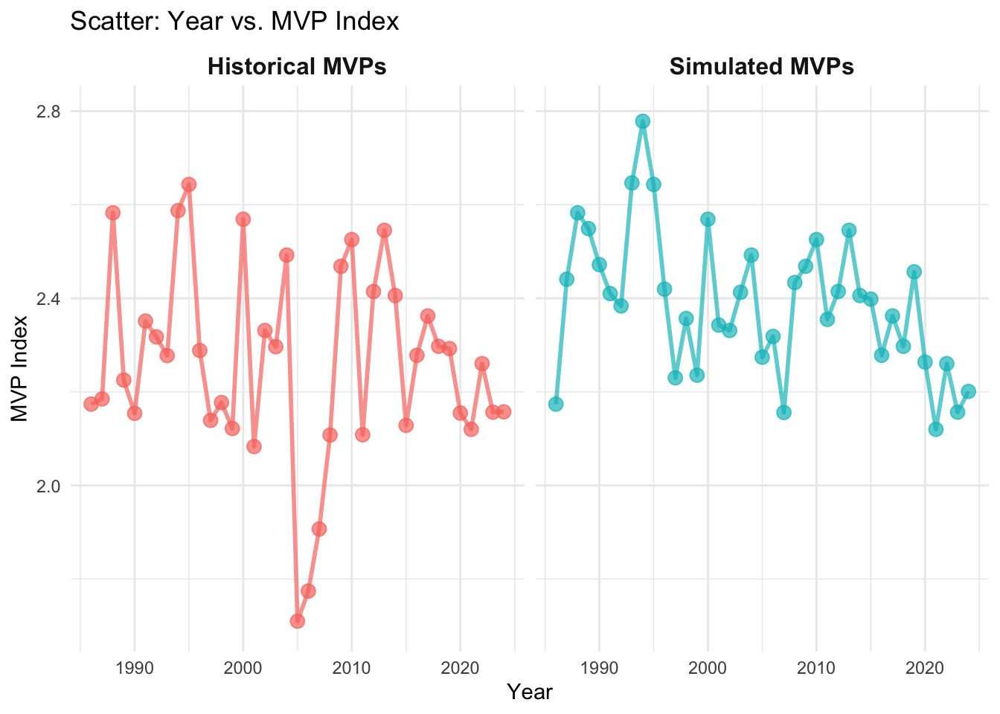
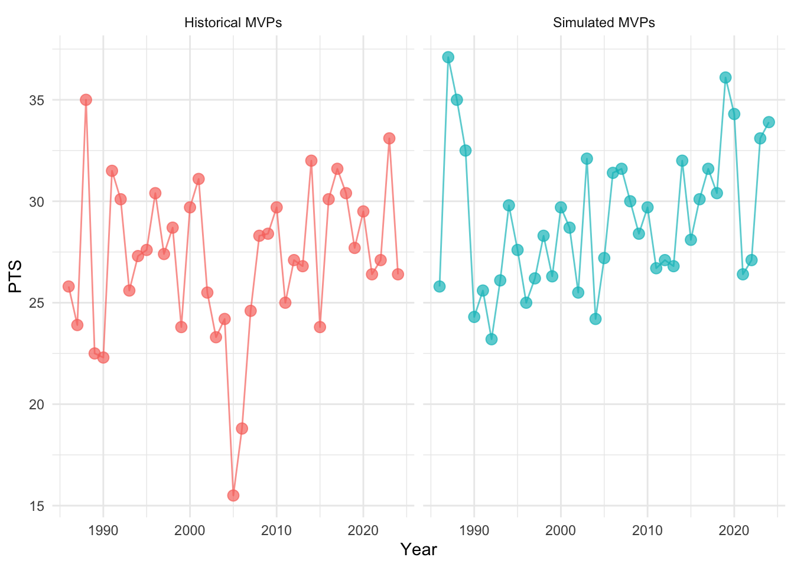
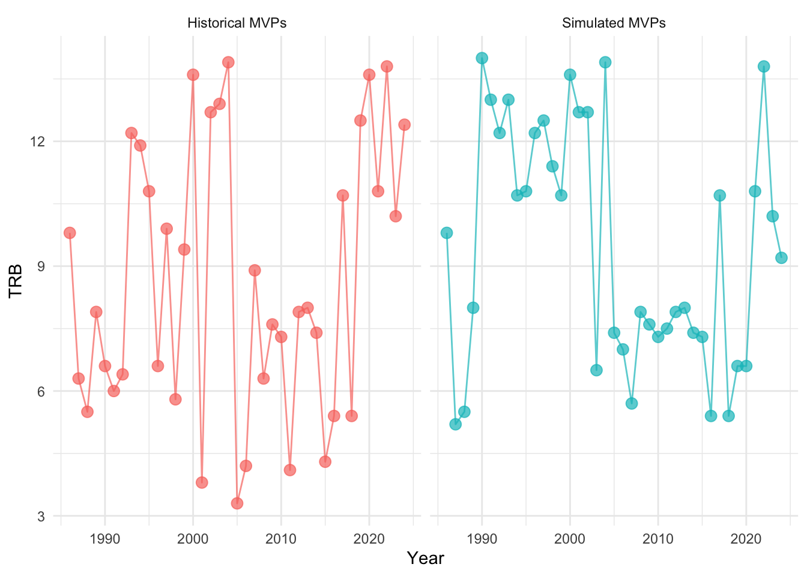
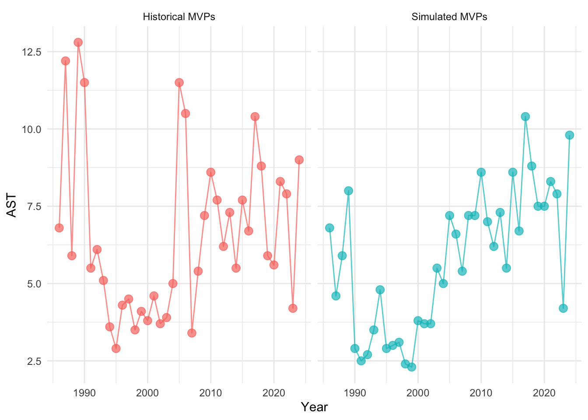

Our data was collected from (Sports Reference LLC 2024), we collected data from every player that received a vote for any All-NBA teams since 1986, this includes a vote cast for the First All-NBA Team, the Second All-NBA Team, and the Third All-NBA Team. As we believed that taking the players that received votes for the MVP awards would result in a smaller sample. We also created a new statistic call MVP_Index that will be defined in Section 2.2. In addition, we collected a data set for all NBA MVPs since 1986, so we could compare to the ones we have chosen with the MVP_Index.
Following Alexander (2023), we use techniques and methods from this text we have analyzed the data using models, graphs, tables and other methods of data analysis to conduct our research to find players that could have been MVPs and what the MVP for the following years will look like(statistically).
2.2 Variables
2.2.1 All NBA Variables
As we collected data from each year since 1986 individually, we have utilized the following variables:
Team: Whether the player was in the 1st, 2nd, or 3rd All NBA Teams or OVR if they did not make the top three teams but still received a vote.
Pos: The player’s position including the generalized positions G, F, C, for Guard, Forward, and Center respectively.
Player: The name of the NBA player.
Age: The age of the NBA player.
Tm: The three letter designation for the NBA team the player played for the year.
G: Games played by the player.
MP: Minutes played per game.
PTS: Points per game.
TRB: Total Rebounds per game, including offensive and defensive rebounds.
BLK: Blocks per game
STL: Steals Per game
WS: The amount of wins allocated to the individual player
As each year has an individual data set we took PTS, TRB, AST, BLK, STL,a nd WS took the average for that year and normalized each player’s statistics by dividing them by the average of that year with this we have created the MVP Index which we have defined as:
With this MVP Index we have created our own list of who could have been MVP base on statistics for that year, essentially comparing how good the player was to othe rplayers in the basketball season.
2.2.2 Historical MVP Variable
For our second set of date we have all MVPs since 1986 also sourced from (Sports Reference LLC 2024), and the variables that have been used are the following:
Player: The name of the NBA player.
Year: The year in which the player was selected as MVP.
Tm: The three letter designation for the NBA team the player played for the year.
G: Games played by the player.
MP: Minutes played per game.
PTS: Points per game.
TRB: Total Rebounds per game, including offensive and defensive rebounds.
BLK: Blocks per game
STL: Steals Per game
WS: The amount of wins allocated to the individual player
2.3 Measurement
Data collected in sports and more specifically basketball is rather simple. When an NBA game is being played there are people who’s entire job is to keep track of a players statistics throughout the game, whenever a player makes a shot, or steals they ball it is being logged by that specific person. After the standard 82 games, there could be morte or less under different circumstances such ast COVID-19, injuries, or even trades all regular season statistics have been collected. As most of our in game statistics are based on the players ‘per game’ average, the total number of points blocks, etc., are recorded it is divided by the number of games the player played that season.
2.4 Outcome variable: MVP Index
Our outcome variable is the same as our estimand in Section 1. As MVP Index is dependent on our other statistics, Points, Assists, Rebounds, Steals, Blocks, and Win Shares. As we are studying MVPs in our paper this is our Variable of interest ast it represents how good a player was in comparison to the other best players in the NBA that year, from the sample of players that have received any ALL NBA Team vote.
3 Model
The goal of our modelling strategy is twofold. Firstly, we will be using a linear regression model to predict the MVP Index of the mvp in the following year regardless of the player. This will tell us how much better we can expect the 2025 MVP to be compared to his fellow NBA players. Secondly, We will use another data set we have created by selecting players that had the highest MVP index in their respective year whether they had won MVP or not. So, Using both these predictions we will be able to compare whether we believe the player with the highest MVP index will in fact be the next NBA MVP.
Here we briefly describe the Linear analysis model used to investigate what the MVP Index of the next NBA MVP will be. For our model we will use collected data describe in Section 2.
Background details and diagnostics are included in Appendix 7.
3.1 Model set-up
Define \(y_i\) as the number of seconds that the plane remained aloft. Then \(\beta_i\) is the wing width and \(\gamma_i\) is the wing length, both measured in millimeters.
# create a linear regression modellm_model <-lm(MVP_index ~ PTS + AST + TRB + BLK + STL + WS, data = nba_master)# View the summary of the modelsummary(lm_model)
next_year_mvp_stats <- mvp_table %>%filter(Year ==2024) %>%# Replace with the target yearselect(PTS, AST, TRB, BLK, STL, WS)# Predict MVP_index for the next year's MVPpredicted_index_mvp_table <-predict(lm_model, newdata = next_year_mvp_stats)print(paste("Predicted MVP Index (mvp_table):", predicted_index_mvp_table))
[1] "Predicted MVP Index (mvp_table): 2.45027833674002"
next_year_real_mvp_stats <- merged_real_mvp %>%filter(Year ==2024) %>%# Replace with the target yearselect(PTS, AST, TRB, BLK, STL, WS)# Predict MVP_index for the next year's MVPpredicted_index_real_mvp <-predict(lm_model, newdata = next_year_real_mvp_stats)
3.1.1 Model justification
We expect a positive relationship between the size of the wings and time spent aloft. In particular…
We can use maths by including latex between dollar signs, for instance \(\theta\).
3.1.2 Model Results
Simulated Data
Historical Data
Year
Simulated Data - Player
Simulated Data - MVP Index
Historical Data - Player
Historical Data - MVP Index
2014
Kevin Durant
2.405868
Kevin Durant
2.405868
2015
Russell Westbrook
2.398289
Stephen Curry
2.128396
2016
Stephen Curry
2.278181
Stephen Curry
2.278181
2017
Russell Westbrook
2.362328
Russell Westbrook
2.362328
2018
James Harden
2.297349
James Harden
2.297349
2019
James Harden
2.456584
Giannis Antetokounmpo
2.292537
2020
James Harden
2.263751
Giannis Antetokounmpo
2.154718
2021
Nikola Jokić
2.119867
Nikola Jokić
2.119867
2022
Nikola Jokić
2.260379
Nikola Jokić
2.260379
2023
Joel Embiid
2.156639
Joel Embiid
2.156639
2024
Luka Dončić
2.200904
Nikola Jokić
2.157337
2025
Predicted MVP
2.450278
Predicted MVP
2.401187
Figure 1: Historical MVP and Player with highest MVP Index since 2014
4 Results
Our results are summarized in ?@tbl-modelresults.

Figure 2: MVP index of of Historical and simulated MVPs

Figure 3: MVP PPG over Time

Figure 4: MVP RPG over Time

Figure 5: MVP ASG over Time
5 Discussion
5.1 First discussion point
If my paper were 10 pages, then should be be at least 2.5 pages. The discussion is a chance to show off what you know and what you learnt from all this.
5.2 Second discussion point
Please don’t use these as sub-heading labels - change them to be what your point actually is.
5.3 Third discussion point
5.4 Weaknesses and next steps
Weaknesses and next steps should also be included.
Appendix
6 Additional data details
7 Model details
# Extract the summary of the modellm_summary <-summary(lm_model)# Extract coefficients as a data framecoef_table <-as.data.frame(lm_summary$coefficients)colnames(coef_table) <-c("Estimate", "Std. Error", "t value", "Pr(>|t|)")# Create the kable tablekable(coef_table, caption ="Linear Regression Model Coefficients") %>%kable_styling(bootstrap_options =c("striped", "hover", "condensed"), full_width =FALSE)
R Core Team. 2023. R: A Language and Environment for Statistical Computing. Vienna, Austria: R Foundation for Statistical Computing. https://www.R-project.org/.